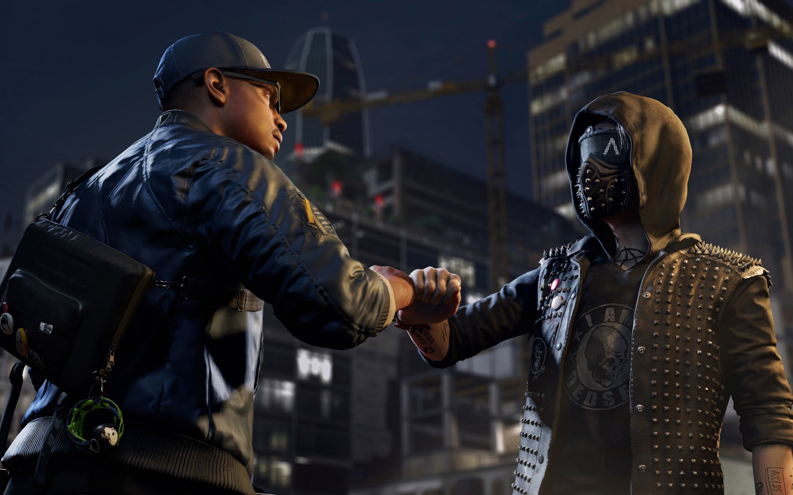
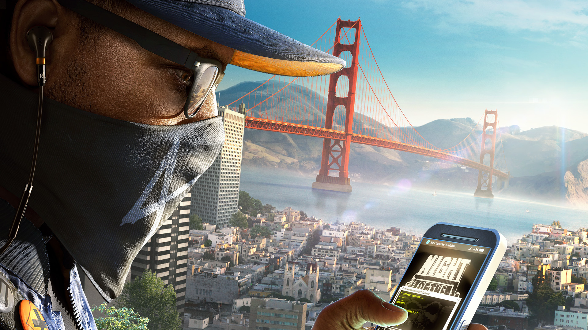
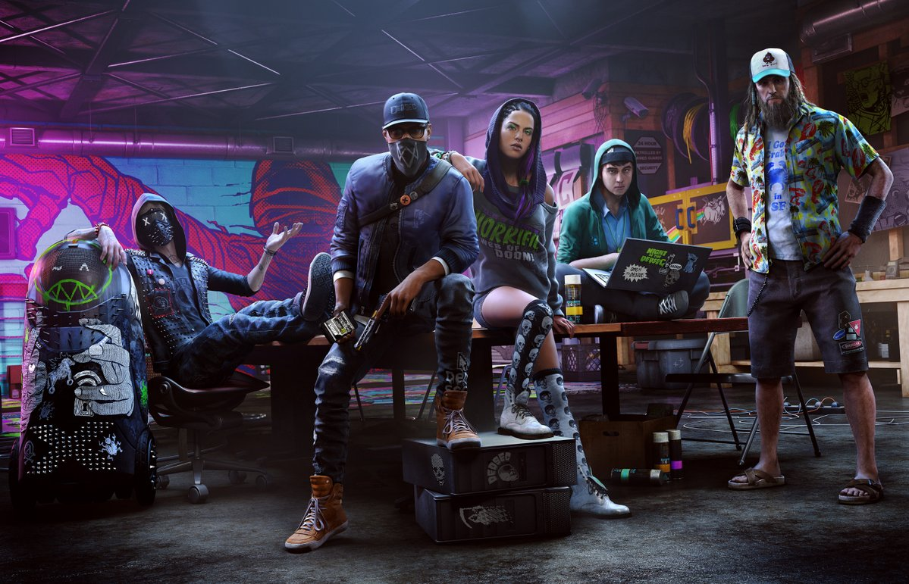
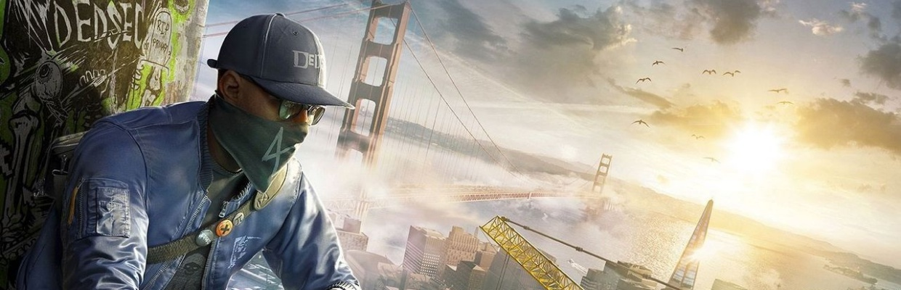

И СЕГОДНЯ ПОЙДЁТ РЕЧЬ О ИГРЕ WATCH DOGS 2ПРИВЕТ,РЕБЯТА!
вот не много фоток из игры
   
мы провели опрос и по результатам
Лично мне игра, очень понравилась она стремительно затягивает сюжетной линией. И хотя мне понадобилось всего лишь около суток, чтобы пройти её целиком, она оставила в моём мировосприятии неизгладимый след. Что же мне понравилось более всего - это: очень достойная графика, классно наблюдать, как работают настоящие хакеры, также есть кооператив и вы можете друг друга взламывать, охотиться и проходить сетевые операции. Очень проработанный мир, если взламывать прохожих можно найти пасхалки, там есть дрон и джампер с ними не только легче проходить мисии, но и классно фаниться. Мне бы очень хотелось, чтобы вы по достоинству оценили данную игру. На последок оставляю ссылку и видео
Офицальный сайт WATCH DOGS 2.
WATCH DOGS 2ЖДИТЕ СЛЕДУЮЩЕГО ВЫПУСКА В НЕМ МЫ ПОГОВОРИМ О НОВОЙ ИГРЕ FAR CRY 5. ТАК ЖЕ Я БУДУ ВЫКЛАДЫВАТЬ ТОРЕНТЫ НА ЭТИ ИГРЫ, СЛЕДИТЕ ЗА ОБНОВЛЕНИЯМИ САЙТА, ЛЮБИТЕ ИГРЫ И НЕ СЛУШАЙТЕ ЛЮДЕЙ , КОТОРЫЕ ГОВОРЯТ ЧТО ИГРЫ ОТСТОЙ! СПАСИБО ЗА ВНИМАНИЕ!!